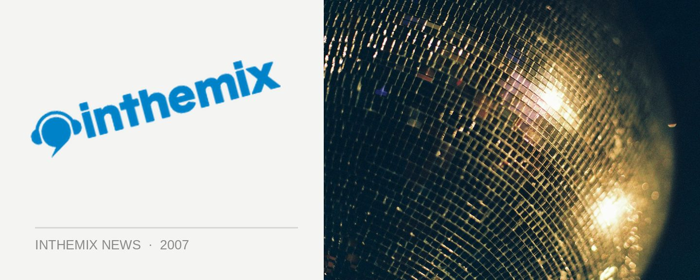

Transmission fires up its semi finals Sunday night
As Transmission Magic City draws even closer, Sunday night at the Temple will see the hopeful up-and-comers duke it out for a chance at being the winner of the Transmission Next Gen DJ Competition, an initiative presented by inthemix that will see two lucky DJs doing their thing on the main and house stages respectively.
The DJs who will be battling it out to decide who will be taking the guest spot on the house stage will include Sez, Random, GST, Ben Cantrell, Jasmine, Robbie Jackson, Nik Mila, Cut-It, Gavin Deeymer, Sean Noreiks, uk_jenn and Toddmole.
On the trance side of the equation, the dueling DJs will include The Anarchist, Toxic, Imperial, Azza United, The Horror, Sam Spade, Mully, Cyrus the Virus, Cantosis, Spinout, Psyx and Selby.
With the stakes so high, it should be a crackin’ heat! Organisers say so far they have been most impressed by the DJ talent on display and they’re looking forward to seeing what other tricks they have in store for the semi final.
Get on down to the Temple at VBar this Sunday night to check out the semi finals, or check out the Transmission FULL COVERAGE page for more details